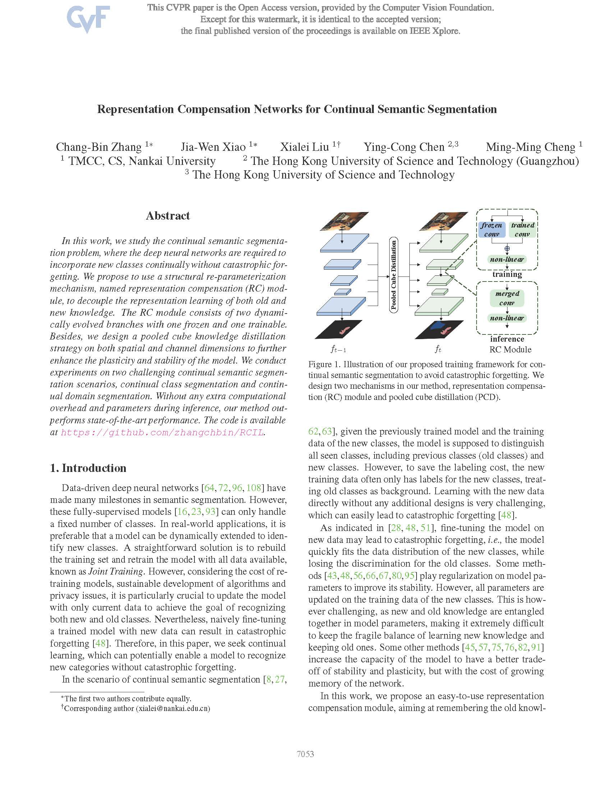

Abstract
In this work, we study the continual semantic segmentation problem, where the deep neural networks are required to incorporate new classes continually without catastrophic forgetting. We propose to use a structural re-parameterization mechanism, named representation compensation (RC) module, to decouple the representation learning of both old and new knowledge. The RC module consists of two dynamically evolved branches with one frozen and one trainable. Besides, we design a pooled cube knowledge distillation strategy on both spatial and channel dimensions to further enhance the plasticity and stability of the model. We conduct experiments on two challenging continual semantic segmentation scenarios, continual class segmentation and continual domain segmentation. Without any extra computational overhead and parameters during inference, our method outperforms state-of-the-art performance.
Method

|
Visualization & More Comparision
.png)
|
|
Paper
 |
Zhang C B, Xiao J W, Liu X, et al.
RC-IL: Representation compensation networks for continual semantic segmentation
In CVPR, 2022. [pdf]
opython
|